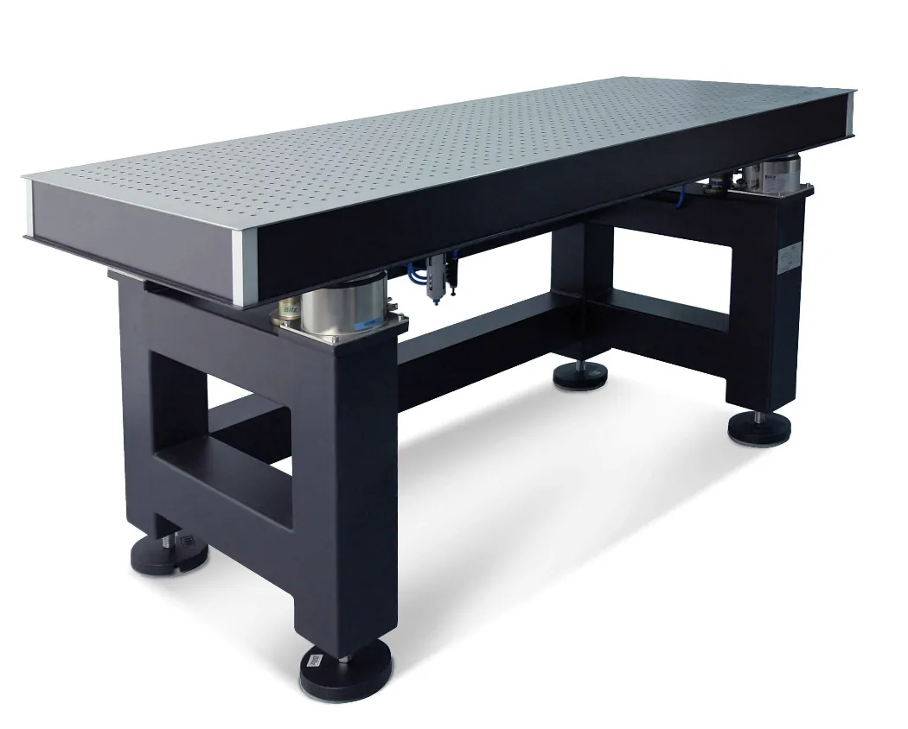

Stoły laboratoryjne LTH i LTO
Stoły antywibracyjne Bilz to kompletne stanowiska laboratoryjne z wbudowaną wibroizolacją pneumatyczną BiAir. Dwie serie — LTH (stoły z blatem granitowym) i LTO (stoły z blatem optycznym) — w trzech wariantach wyposażenia: ED, OC i PAS.
Konstrukcja stołu łączy masywną ramę stalową z precyzyjnie obrobioną płytą górną i wibroizolatorami pneumatycznymi BiAir. Rezultat: stabilne, pozbawione drgań stanowisko pracy gotowe do najbardziej wymagających zastosowań w metrologii, optyce i kontroli jakości.

